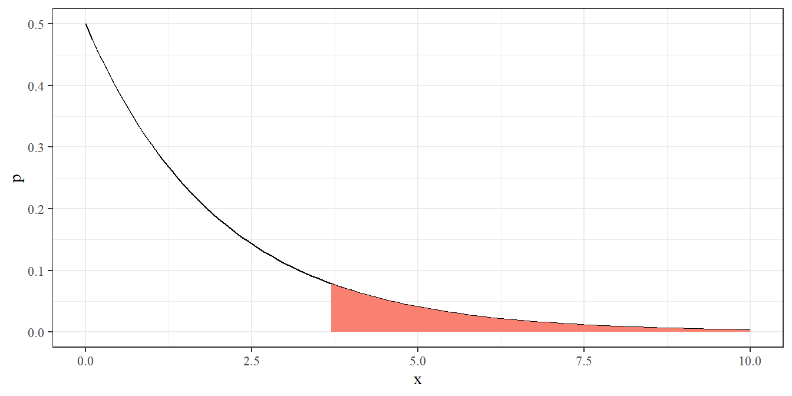

4 Ett stickprov av icke-normalfördelad data
Datorövning 4 handlar om hypotestest och konfidensintervall för ett stickprov av icke-normalfördelad data. Efter övningen ska vi kunna
genomföra och tolka ett z-test för proportioner,
genomföra och tolka ett chi-två-test för nominal data
beräkna och tolka ett konfidensintervall för proportioner,
använda simulerad data för att förstå testens egenskaper.
Om det finns tid för en bonussektion kommer vi också titta på interaktiva kartor med leaflet.
4.1 Repetition av datorövning 3
När man startar en ny R-session bör man ladda de paket man vet kommer behövas med library(). Om paket inte finns installerade måste man först köra install.packages().
I datorövning 4 tittade vi på analys av ett stickprov av normalfördelad data. Det underliggande upplägget är att vi vill säga något om en population genom att titta på ett stickprov. Ett t-test kan användas för att testa en given nollhypotes. Ett konfidensintervall ringar in populationens medelvärde med en viss konfidensgrad - oftast 95 procent. Ett normalfördelningsantagande kan undersökas med histogram eller QQ-grafer.
Ta som exempel följande data på jord-pH och låt oss anta att det är relevant att testa om populationens medelvärde är 7.
dat_pH <- data.frame(pH = c(6.3, 6.55, 6.75, 6.4, 7.25, 6.65, 6.8, 7.3, 7.15, 6.7))
ggplot(dat_pH, aes(pH, 0)) +
geom_point(size = 4) +
geom_vline(xintercept = 7, size = 5, color = "red", alpha = 0.4) +
theme(axis.text.y = element_blank(),
axis.title.y = element_blank(),
axis.ticks = element_blank())Hypoteser ges av
- H0: mu lika med 7
- H1: mu ej lika med 7
Testet kan genomföras med funktionen t.test().
##
## One Sample t-test
##
## data: dat_pH$pH
## t = -1.9624, df = 9, p-value = 0.08132
## alternative hypothesis: true mean is not equal to 7
## 95 percent confidence interval:
## 6.537164 7.032836
## sample estimates:
## mean of x
## 6.785Ett p-värde över 0.05 ger att vi inte förkastar nollhypotesen - den observerade skillnaden mot 7 är inte statistiskt signifikant. Konfidensintervallet ger att populationens medelvärde ligger mellan 6.54 och 7.03 med 95 procents konfidens.
En QQ-graf kan visa om det finns några avvikelser från normalantagandet. Med små datamängder är det oftast svårt att se några tydliga tecken på icke-normalitet.
4.2 Proportioner från binär data
Binär data är data där en observation har ett av två utfall, vilka kan kodas som noll och ett. Man talar ibland om utfallet ett som ett positivt utfall. Binär data kan sammanfattas med en proportion - antalet positiva utfall delat på det totala antalet upprepningar. En proportion kan testas med ett z-test för proportioner (eller relativ frekvens). Testet följer stegen för hypotestest (Hypoteser - Testvärde - Testfördelning - P-värde (eller jämförelse med kritiskt värde) - Slutsats).
Låt oss importera lite exempeldata och beräkna ett exempel. Följande rad importerar matchresultat i fotbollsallsvenskan för damer 2000-2020.
library(tidyverse)
dat_alls <- read_csv("https://raw.githubusercontent.com/adamflr/ST0060/main/Data/Allsvenskan%2C%20damer%2C%202000-2020.csv")
ggplot(dat_alls, aes(hemmamal, bortamal)) +
geom_jitter(size = 0.1)Uppgift 4.1 (En interaktiv målgraf) Kör stycket nedan för en interaktiv målgraf. Vilken match gav det högsta antalet gjorda bortamål?
Gammal bollkunskap säger att var tredje match är en bortavinst. Vi kan testa det med ett z-test för proportioner. För att ta fram antalet bortasegrar och totalt antal matcher använder vi count() på kolumnen resultat. Man kan också använda funktionen table() för ett liknande resultat.
## # A tibble: 3 × 2
## resultat n
## <chr> <int>
## 1 Bortaseger 947
## 2 Hemmaseger 1285
## 3 Oavgjort 518##
## Bortaseger Hemmaseger Oavgjort
## 947 1285 518Datan har 947 bortasegrar av totalt 947 + 1803 matcher. Vår skattade proportion p och totala antal n är alltså
## [1] 0.3443636## [1] 2750För att genomföra ett z-test sätter vi upp hypoteser om proportionen bortasegrar.
- Nollhypotes H0: p lika med 0.33
- Alternativhypotes H1: p ej lika med 0.33
Ett test kan köras i R med prop.test().
##
## 1-sample proportions test without continuity correction
##
## data: 947 out of 2750, null probability 0.33
## X-squared = 2.5661, df = 1, p-value = 0.1092
## alternative hypothesis: true p is not equal to 0.33
## 95 percent confidence interval:
## 0.3268327 0.3623288
## sample estimates:
## p
## 0.3443636P-värdet ställs mot en förbestämd signifikansnivå (vanligen 5 procent). I det här fallet leder det höga p-värdet till att nollhypotesen accepteras.
Om vi tar en närmre titt på testets steg brörjar vi med att beräkna ett testvärde.
## [1] 1.601904Därefter kan p-värdet räknas ut som arean under en standardiserad normalfördelning bortom z-värdet. Eftersom vi har en tvåsidig mothypotes adderas de två svansarna.
dat_norm <- data.frame(x = seq(-4, 4, 0.1)) %>%
mutate(p = dnorm(x))
ggplot(dat_norm) +
geom_line(aes(x, p)) +
geom_ribbon(aes(x = x, ymin = 0, ymax = p), data = dat_norm %>% filter(x > abs(z_value)), fill = "salmon") +
geom_ribbon(aes(x = x, ymin = 0, ymax = p), data = dat_norm %>% filter(x < -abs(z_value)), fill = "salmon")
Areans yta kan tas fram med normalfördelningens fördelningsfunktion pnorm().
## [1] 0.1091769Testets p-värde är ungefär 11 procent. Vår observation är alltså inte ett orimligt utfall om den faktiska sannolikheten för bortaseger är 0.33 och vi kan inte förkasta nollhypotesen på femprocentsnivån.
Om man löste uppgiften för hand skulle man istället för att beräkna p-värdet jämföra z-värdet med ett kritisk värde ur en tabell. Det kritiska värdet för fem-procentig signifikans är 1.96. Vi kan också ta fram det genom qnorm(0.975).
Vi kan jämföra den beräkning med den direkta R-funktionen.
##
## 1-sample proportions test without continuity correction
##
## data: 947 out of 2750, null probability 0.33
## X-squared = 2.5661, df = 1, p-value = 0.1092
## alternative hypothesis: true p is not equal to 0.33
## 95 percent confidence interval:
## 0.3268327 0.3623288
## sample estimates:
## p
## 0.3443636Den stegvisa beräkningen gav samma utfall som funktionen (p-value = 0.01092). Funktionen ger inte z-värdet utan ett chi-två-värde (2.5661). Här är det värdet lika med z-värdet i kvadrat.
## [1] 2.566095Uppgift 4.2 (Ensidigt test) Titta på hjälpsidan med ?prop.test. Hur genomför man ett ensidigt test? Gör lämpligt tillägg för att testa om andelen bortasegrar är större än 0.33.
Uppgift 4.3 (Test för proportionen oavgjorda) Samma gamla bollkunskap säger att 20 procent av matcher blir oavgjorda. I datan är 518 av 2750 matcher oavgjorda. Ställ upp hypoteser och fyll i koden nedan för att testa om bollkunskapen stämmer.
Uppgift 4.4 (Test för proportionen hemmasegrar) Slutligen är då resten av matcherna, 1285 av 2750, hemmasegrar. Gammal bollkunskap säger: 47 procent av alla matcher är hemmasegrar. Genomför ett z-test för att testa det påstående.
Uppgift 4.5 (Population och stickprov) Ett hypotestest bygger på en underliggande tanke med en population (med någon för oss okänd proportion positiva utfall) och ett stickprov (i vilket vi kan observera andelen positiva utfall). Det är inte alltid uppenbart vad som egentligen är populationen. I fallet med fotbollsdatan, vad kan ses som populationen? Hur långt skulle man kunna generalisera de slutsatser man kan dra från datan?
Uppgift 4.6 (Guldfiskgenetik) (Fråga från Olsson, Biometri) En teori inom genetik förutsäger att tre fjärdedelar i en grupp guldfiskar ska ha genomskinliga fjäll. Observationer ger att nittio av hundra har genomskinliga fjäll. Genomför ett test med prop.test() för att se om den faktiska proportionen skiljer sig från 0.75. Lös gärna först uppgiften för hand eller med miniräknare.
Uppgift 4.7 (Mer guldfiskgenetik) (Fråga från Olsson, Biometri) En konkurrerande teori inom genetik förutsäger att femton sextondelar (proportionen 0.9375) ska ha genomskinliga fjäll. Observationer ger att nittio av hundra har genomskinliga fjäll. Genomför ett test med prop.test() för att se om proportionen skiljer sig från 0.9375. Lös gärna först uppgiften för hand eller med miniräknare.
Hypotestestet för proportioner som används här, z-testet, bygger på en normalapproximation av en binomialfördelning. Approximation blir bättre när antalet observationer är stort och nollhypotesens värde p0 ligger nära 0.5. En vanlig tumregel för när approximationen är giltig är att n gånger p0 gånger (1 - p0) ska vara större än 10. För fotbollsdatan över oavgjorda matcher ger det 2750 * 0.2 * 0.8 vilket är klart större än 10.
Uppgift 4.8 (Giltig approximation) I det andra guldfiskexemplet är antalet observationer 100 och nollhypotesens värde 0.9375. Är normalapproximationen giltig i det fallet?
Uppgift 4.9 (Fågelproportioner) I ett naturreservat tror man fördelningen av tre fåglar (tärnmås, fiskmås och fisktärna) är 50, 30 respektive 20 procent. En studie ger antalen 115, 54 respektive 31. Genomför tre z-test för att testa den antagna andelarna. För tärnmås får man till exempel prop.test(115, 200, p = 0.5, correct = F).
Uppgift 4.10 (Förbestämd signifikans) En intressant egenskap hos proportionstest är att man redan i förväg kan beräkna vilka utfall som ger signifikanta resulat. Säg att man har möjlighet att göra 100 replikat. Ändra i stycket nedan för att hitta det högsta värde på x som ger ett icke-signifikant utfall.
Det är möjligt att göra liknande beräkningar för ett t-test för normalfördelad data, men då måste man göra antaganden om standardavvikelsens storlek.
4.3 Konfidensintervall för proportioner
Konstruktionen av ett konfidensintervall för en proportion är ganska lik konstruktionen för ett medelvärde. För en skattad proportion p och antal observationer n kan man beräkna p plus/minus ett z-värde från tabell gånger medelfelet, där medelfelet ges av roten ur p * (1 - p) / n. För exemplet med bortasegrar i allsvenskan är p = 0.344 och n = 2750. Tabellvärdet hämtas från en tabell över kvantiler. För ett 95-procentigt konfidensintervall tar vi kvantilen 0.975 (2.5 procent i respektive svans) vilket ger värdet 1.96. Konfidensintervallet ges av
## [1] 0.3266042## [1] 0.3621231Notera att 0.33, det värde som var nollhypotesen i det tidigare testet, ingår i intervallet. Om man tittar på utskriften från prop.test() kan man se ett konfidensintervall. Det intervallet är dock inte beräknat på samma sätt den formel som förekommer på föreläsningarna. För att få matchande utskrift kan vi använda paketet binom och funktionen binom.asymp().
## method x n mean lower upper
## 1 asymptotic 947 2750 0.3443636 0.3266045 0.3621228Uppgift 4.11 (99-procentigt konfidensintervall) Gör lämplig ändring i koden nedan för att beräkna ett 99-procentigt konfidensintervall för andelen bortasegrar.
Uppgift 4.12 (Perfekta utfall) Vad händer om man försöker räkna ut ett konfidensintervall för ett perfekt utfall - t.ex. om man får 100 av 100 positiva utfall?
Uppgift 4.13 (Konfidensintervall för guldfiskar) Använd funktionen binom.asymp() för att ta fram konfidensintervallet för andelen guldfiskar från den tidigare uppgiften. Hur förhåller sig resultatet till nollhypotesernas värden (0.75 respektive 0.9375)? Gör motsvarande beräkning med miniräknare.
4.4 Chi-två-test för goodness-of-fit
Ett proportionstest kan ses som ett test av en variabel med två möjliga klasser som utfall. Ett goodness-of-fit-test utvecklar det till valfritt antal klasser. Testet utförs som ett chi-två-test genom att beräkna ett observerat antal O och ett förväntat antal E för varje klass. Testvärdet ges av att man beräknar (O - E)^2 / E för varje klass och sedan summerar. Testfunktionen är en chi-två-fördelning där antalet frihetsgrader beror på antalet klasser.
Låt oss göra ett exempel baserat på fotbollsdatan. Där hade vi utfallet 947, 518 och 1285 för bortaseger, oavgjort och hemmaseger. Klassisk bollkunskap gav oss sannolikheterna 33, 20 och 47 procent. Testets hypoteser ges av
H0: sannolikheterna för de olika utfallet ges av 33, 20 respektive 47 procent
H1: minst något utfall har en annan sannolikhet än 33, 20 respektive 47 procent
För att få de förväntade värdena E multipliceras nollhypotesens sannolikheter med det totala antalet matcher.
Uppgift 4.14 (Granska E) Skriv ut objektet E och jämför med de observerade värdena. Notera att de förväntade värdena inte måste vara heltal, trots att de observerade värdena förstås alltid kommer vara det.
Testvärdet beräknas genom formeln för varje term följt av summan.
P-värdet beräknas från en chi-två-fördelning. Antalet frihetsgrader ges av antalet klasser minus antalet skattade parametrar minus ett. I det här fallet har inga parametrar skattats från datan så antalet frihetsgrader blir två. Ett chi-två-test beräknas med kvadrater så vi är enbart intresserade av högra svansen.
dat_chisq <- data.frame(x = seq(0, 10, 0.1)) %>%
mutate(p = dchisq(x, df = 2))
ggplot() +
geom_line(aes(x, p), data = dat_chisq) +
geom_ribbon(aes(x, ymin = 0, ymax = p), data = dat_chisq %>% filter(x > chisq_value), fill = "salmon")
Man kan också beräkna ytan i svansen med pchisq(). Ett minus det resultatet ger den övre delen.
## [1] 0.1632763P-värdet är alltså 0.16, över den klassiska signifikansnivån på 5 procent, vilket ger att vi inte kan förkasta nollhypotesen. Om man gör ett chi-två-test för hand jämför man det observerade chi-två-värdet med ett tabellvärde över kvantiler. Tabellvärdet kan också hämtas med funktionen qchisq(), i det här fallet
## [1] 5.991465Notera att man tar 0.95 eftersom man alltid tittar på den yttre svansen i ett chi-två-test.
R har en inbyggd funktion för chi-två-test. Dess argument ges av observerade antal och sannolikheter.
##
## Chi-squared test for given probabilities
##
## data: O
## X-squared = 3.6246, df = 2, p-value = 0.1633Testet ger samma chi-två-värde och p-värde som beräknats ovan.
Uppgift 4.15 (Chi-två med två klasser) Situationen med flera klasser kan som sagt ses som en generalisering av fallet med två klasser. Det är alltså logiskt att chi-två-test kan användas även när man har två klasser. Följande exempel ger samma test som vi sett tidigare av andelen bortasegrar.
##
## Chi-squared test for given probabilities
##
## data: c(947, 1803)
## X-squared = 2.5661, df = 1, p-value = 0.1092Likt prop.test() sätter vi correct till FALSE för att inte göra en korrektion. Notera att x här anges som positiva och negativa utfall istället för positiva utfall och totalt antal utfall, vilket var fallet i prop.test().
Använd stycket ovan som mall för att göra uppgiften om guldfiskar som ett chi-två-test. Testa nollhypotesen att andelen positiva utfall är 0.75.
Chi-två-testet bygger på en underliggande normal-liknande approximation. En vanlig tumregel är att alla förväntade värden ska vara större än 5. R ger en varning om så inte är fallet.
##
## Chi-squared test for given probabilities
##
## data: c(6, 4)
## X-squared = 0.32413, df = 1, p-value = 0.5691Uppgift 4.16 (Chi-två med lika sannolikheter) En vanlig tillämpning av goodness-of-fit-testet är för att testa om alla klasser är lika sannolika. En jämn fördelning är grundinställning i chisq.test() så i det fallet behöver man bara ange de observerade värdena. En datainsamling om M&M-godis gav följande antal.
dat_mnm <- data.frame(Color = c("blue", "brown", "green", "orange", "red", "yellow"),
Count = c(180, 80, 88, 160, 134, 166))
ggplot(dat_mnm, aes(Color, Count, fill = Color)) +
geom_col() +
scale_fill_manual(values = dat_mnm$Color)
Använd de observerade värdena i kolumnen Count för att testa om alla godisfärger är lika vanliga.
Om man har flera klasser kan det vara värdefullt att se vilken klass som bidrar mest till chi-två-värdet. Det kan ge en bild av vilka klasser som är mest speciella. Ett enkelt sätt att göra det på är att spara utfallet av chisq.test() som ett objekt och därifrån hämta observed och expected. Som fortsättning på fotbollsexemplet:
## [1] 907.5 550.0 1292.5## [1] 947 518 1285## [1] 1.71928375 1.86181818 0.04352031Antalet hemmavinster (det tredje värdet) ligger när den teoretiska sannolikheten medan de övriga två utfallen ligger längre från.
Uppgift 4.17 (Udda färger) Spara testobjektet från testet på M&M-färger för att se vilka färger som avviker mest från det väntade utfallet.
Uppgift 4.18 (Fågelproportioner som chi-två) I naturreservatet från en tidigare uppgift tror man fördelningen av tre fåglar (tärnmås, fiskmås och fisktärna) är 50, 30 respektive 20 procent. En studie ger antalen 115, 54 respektive 31. Genomför ett chi-två-test för att testa de antagna andelarna. Är resultatet i linje med de separata testen från den tidigare uppgiften?
Uppgift 4.19 (Udda fåglar) Spara testobjektet från chi-två-testet för fåglarna för att se vilka fågelarter som avviker mest från det väntade utfallet.
4.5 Chi-två-test när någon parameter skattas från datan
(Det här stycket är överkurs och kan läsas översiktligt eller hoppas över.)
I de exempel vi sett hittills har nollhypotesen direkt givit de sannolikheter vi vill testa. Ett annat vanligt fall är att man testar om värdena följer en viss fördelning, men parametervärden i den fördelningen skattas från den insamlade datan. Ta som exempel frågan om antal mål per match följer en poissonfördelning. Hypoteserna ges av
H0: antal mål följer en poissonfördelning,
H1: antal mål följer ej en poissonfördelning.
Här måste vi skatta medelvärdet från datan för att beräkna sannolikheter från fördelningen.
## [1] 3.290182dat_goals <- dat_alls %>%
count(Mål = bortamal + hemmamal, name = "O") %>%
mutate(p = dpois(Mål, lambda = mean_goals),
E = p * 2750)
dat_goals## # A tibble: 13 × 4
## Mål O p E
## <dbl> <int> <dbl> <dbl>
## 1 0 138 0.0372 102.
## 2 1 383 0.123 337.
## 3 2 548 0.202 554.
## 4 3 542 0.221 608.
## 5 4 466 0.182 500.
## 6 5 306 0.120 329.
## 7 6 183 0.0656 180.
## 8 7 97 0.0308 84.8
## 9 8 42 0.0127 34.9
## 10 9 29 0.00464 12.8
## 11 10 6 0.00153 4.20
## 12 11 5 0.000456 1.26
## 13 12 5 0.000125 0.344En graf kan illustrera faktiska antal (som punkter) och den skattade poissonfördelningen (som linje).
Uppgift 4.20 (Målgraf) Fyll i de saknade delarna i koden nedan för en graf med faktiska antal O som punkter och förväntade antal E som en linje.
De faktiska observationerna är inte så långt från poissonfördelningen.
Ett problem med de förväntade antalen är att några av dem är under 5 - den gräns vi satte för en acceptabel chi-två-approximation. Det vanligaste sättet att hantera det är att slå ihop klasser. Här slås klasser över 9 ihop till en grupp. Det är inte så väsentligt hur det görs här, även om ifelse() kan vara ett nyttigt trick.
dat_goals_merged <- dat_goals %>%
mutate(Mål = ifelse(Mål > 9, 10, Mål)) %>%
group_by(Mål) %>%
summarise(O = sum(O),
p = sum(p),
E = sum(E))
dat_goals_merged## # A tibble: 11 × 4
## Mål O p E
## <dbl> <int> <dbl> <dbl>
## 1 0 138 0.0372 102.
## 2 1 383 0.123 337.
## 3 2 548 0.202 554.
## 4 3 542 0.221 608.
## 5 4 466 0.182 500.
## 6 5 306 0.120 329.
## 7 6 183 0.0656 180.
## 8 7 97 0.0308 84.8
## 9 8 42 0.0127 34.9
## 10 9 29 0.00464 12.8
## 11 10 16 0.00211 5.80En sista svårighet är antalet frihetsgrader. I ett goodness-of-fit-test ges antalet frihetsgrader av antalet klasser minus antalet skattade parametrar minus 1. I det här fallet har vi nu 11 klasser och vi har skattat en parameter. Vi ska alltså ha 9 frihetsgrader i testet. Funktionen chisq.test() beräknar tyvärr antalet frihetsgrader internt som antalet klasser minus 1, så vi får beräkna chi-två-värde och p-värde på egen hand.
chisq_value <- sum((dat_goals_merged$O - dat_goals_merged$E)^2 / dat_goals_merged$E)
1 - pchisq(chisq_value, df = 9)## [1] 6.984746e-12Chi-två-värdet blir extremt stort och p-värdet väldigt lågt. Nollhypotesen att antalet mål följer en poissonfördelning förkastas.
4.6 Bonus. Interaktiva kartor med leaflet
Paketet leaflet (https://rstudio.github.io/leaflet/) kopplar R till leaflet - ett verktyg för interaktiva kartor som ofta använd för kartor online.
Uppgift 4.21 (Installera leaflet) Installera och ladda `leaflet genom att fylla i och köra raden nedan.
Som en första kontroll kan vi köra den exempelkod som ges på hemsidan länkad till ovan.
m <- leaflet() %>%
addTiles() %>%
addMarkers(lng = 174.768, lat = -36.852, popup="The birthplace of R")
mPå canvassidan finns en excelfil med data tillgänglig på Artportalen - Artportalen, feromoninventering, 2011-2013.xlsx. Datan kommer från från ett inventeringsprojekt vid SLU.
Uppgift 4.22 (Importera datan) Ladda ner excelfilen och läs in datan med read_excel() från paketet readxl.
Kartans utseende kan ändras genom att ange en källa och karttyp. Tillgängliga alternativ kan skrivas ut med providers.
Uppgift 4.23 (Baskarta) Skriv ut tillgängliga baskartor med providers. Välj ett alternativ slumpmässigt och ändra koden ovan för att se hur det ser ut.
För att lägga till datapunkter kan man använda addCircleMarkers().
Uppgift 4.24 (Cirkelstorlek) Ändra storleken på cirklarna från addCircleMarkers() genom argumentet radius.
Slutligen kan vi lägga till en etikett för år med argumentet popup. Texten kommer upp när man klickar på en punkt.
leaflet() %>%
addTiles() %>%
addCircleMarkers(lng = dat_leaf$lng, lat = dat_leaf$lat, radius = 10, popup = dat_leaf$Rödlistade)Uppgift 4.25 (Artnamn) Ändra i koden ovan för att ange artnamn som popup-text istället för rödlistestatus. Funktionen paste() kan också vara intressant för att ta med mer information i texten: paste(dat_leaf$Rödlistade, dat_leaf$Antal) skulle exempelvis ge både status och antal individer vid den specifika observationen.